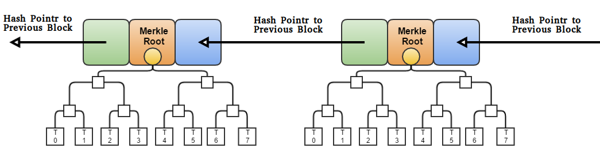

BLOCKCHAIN
under the hood
A technical introduction to Blockchain
for not (so) technical people
Stefano Paluello @21.co/palutz
BUZZWORD AREA !!!
Blockchain
Distributed Ledger Tech.
Bitcoin
Ethereum
Smart Contract
Token
ICO
...
Result?

Blockchain
Definition(s) ( from Wikipedia )
Still ... ?
Let's come back to...
the basics !!!
Basics 1
Asset
Everything (physical or virtual) that we own and could be exchanged.
Transaction
The action of changing assets ownership
Basics 2
Contract
Set of rules and conditions used with transactions
Ledger
Book-keeping track of everything happening in our system
Intermediary
A, eventually, third party facilitating or witnessing the transaction
A step further...
Distributed ledger
The effort to collect transactions is distributed across different trusted parties
Step by step...
The Bitcoin Blockchain
(credit: MIT Technology Review)

How Blockchain works...
(credit: PwC)
Key concepts
- Cryptographic functions and hash data structure
- Decentralised protocol
- Distributed ledger (P2P network)
Network types
(Centralized, Distributed, Decentralized)
Hash and crypto
Disclaimer:
this is the tricky part
Hash function
Hash function is a mathematical function with 3 properties:
Cryptographic Hash function
A Cryptographic Hash function has 3 additional feature:
Here we go again...
Please
Let me explain
Collision resistance
It's INFEASIBLE to find two values with the same hash
with SHA-256 we need to try 2^130 random inputs to achieve a 99.8% chance that at least 2 items will collide
Application: message digest
Let me explain 2
Hiding
There is no FEASIBLE way to understand the input (x) of a hash function H from its output (or cypher Y)
Application: commitment. Committing to a value or a message.
Let me explain 3
Puzzle friendly
This is the most complicated one. Simple explanation: if someone wants to target our hash function to “force” an output, or to produce a predetermined value, there is no other way than trying all the possible inputs.
Application: Search puzzle.
Hash Data structure
How we store data using our cryptohash functions
Hash Data pointer
A hash pointer is simply a pointer to where some information is stored together with a cryptographic hash of the information
Block chain
A block chain is “simply” a linked list using hash pointers
Merkle Tree
A binary tree with hash pointer is called Merkle Tree
Merkle Tree and block chain. Remember anything?
The Blockchain!
Benefits of Blockchain
- Immutability – A third party cannot make any changes to data.
- Corruption & tamper proof – Apps are based on a network formed around the principle of consensus, making censorship infeasible.
- Secure – No central point of failure and secured using cryptography, applications are well protected against hacking attacks and fraudulent activities.
- Zero downtime – Apps never go down and can never be switched off (sort of).
Downsides
- write decentralized app is a bit tricky: quite new theory, not so much experience, lack of proper/stable tools.
- smart contracts could be faulty or buggy (DAO hack, ICO hack, ...)
- if a mistake is made there is no other way to correct it ithan with a Harf Fork.